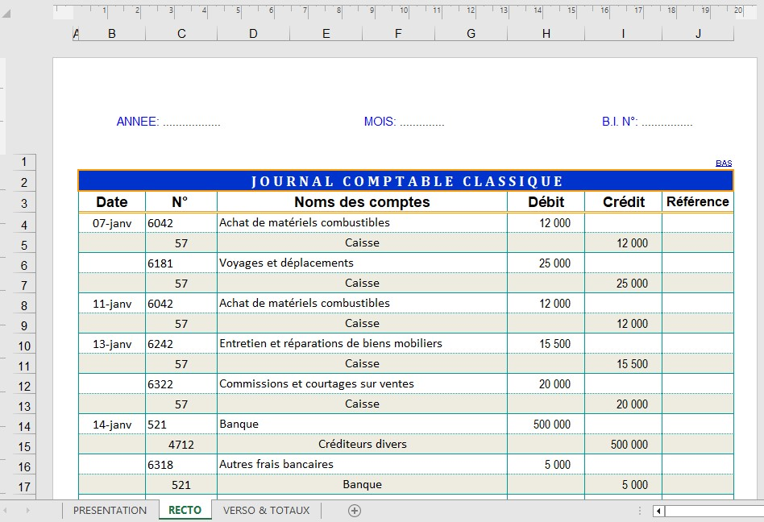

Première page d’écritures comptables (RECTO)
Cette capture illustre la première page du journal comptable dans IMPUMAT. Aperçu des écritures comptables, il affiche en entête, la date de la période comptable et le numéro de Bordereau d’imputations comptables (ou du journal comptable).
Le journal comptable présente 6 colonnes :
- les dates d’opérations,
- les numéros et noms de comptes,
- les montants débit et crédit,
- les pièces justificatives référencées.